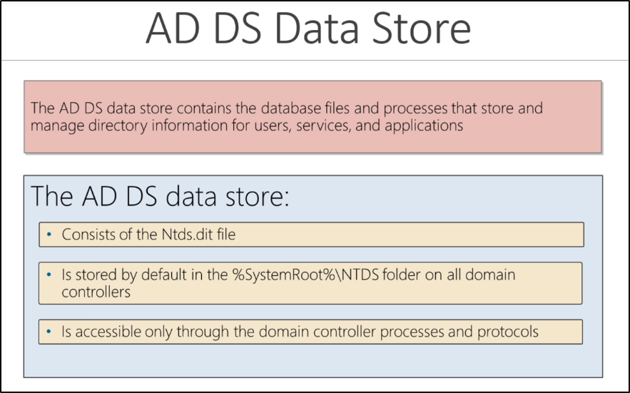

Domain Controllers:
It is the "Head Honcho" of all the server,
It hosts your “phone book” with all objects and (Active Directory Domain Services)
Provides authentication with Kerberos and tickets
In an Internal Pentesting, you should not focus only on compromising Domain Controller(s) only,
but to PIIs too (Personal Identifier Information) like SSN, Credit Cards etc.


AD DS Data Store:
When you compromise a Domain controller, you want to grab the Ntds.dir file (stored by default in %SystemRoot%\Ntds folder)
The file contains everything that is stored in Active Directory Data: (Users, Objects, Groups etc)
The file contains the Password Hashed of all the Users in that domain
(You can crack offline or use them like “Pass the Hash” attack or a “Golden Ticket” attack)
